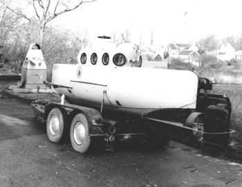

|  copyright - WHOI |
|
Cubmarine was a two-person, battery powered submarine first leased by WHOI in1962. The 4,700 pound sub could descend 165', stay submerged for five hours and travel at five knots underwater. WHOI scientist William E. Schevill planned to photograph whales in Cape Cod Bay. In addition, Cubmarine was presumably the first sub to explore Woods Hole Passage.
WHOI again used the sub in 1966 for shallow dives in the Georges Bank
area off Cape Cod.